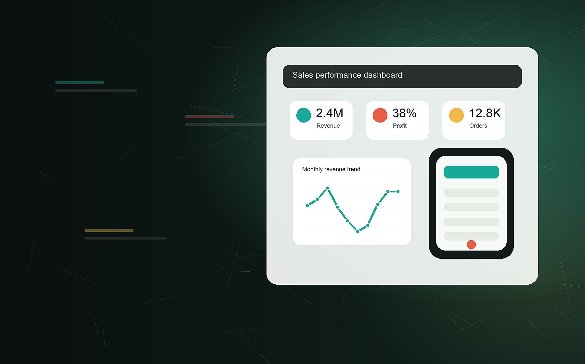

Dashboard Thinking
Builds KPI-focused Excel and BI views that make revenue, profit, and trends easy to read.

Data Analytics + UI/UX
I turn raw data into clear dashboards and shape user focused digital experiences with Excel, Power BI, SQL, Python, wireframes, and prototypes.
Portfolio Snapshot
Profile
I am a Computer Science Engineering graduate focused on data analytics, dashboarding, and practical UI/UX design. My work combines clean data preparation, useful reporting, and simple interfaces that help people understand what to do next.
Builds KPI-focused Excel and BI views that make revenue, profit, and trends easy to read.
Handles missing values, duplicates, date formats, and structured analysis preparation.
Creates wireframes, prototypes, and feedback-driven mobile application improvements.
Selected Work
Analyzed raw sales data and built a dashboard with KPIs for revenue, profit, orders, and profit margin.
Prepared a sales dataset and created analysis views for total sales, monthly revenue, and top customers.
Experience
Capabilities
Education
B.E. in Computer Science and Engineering
CGPA 7.33Higher secondary school in Computer Science
67%Certifications
Contact